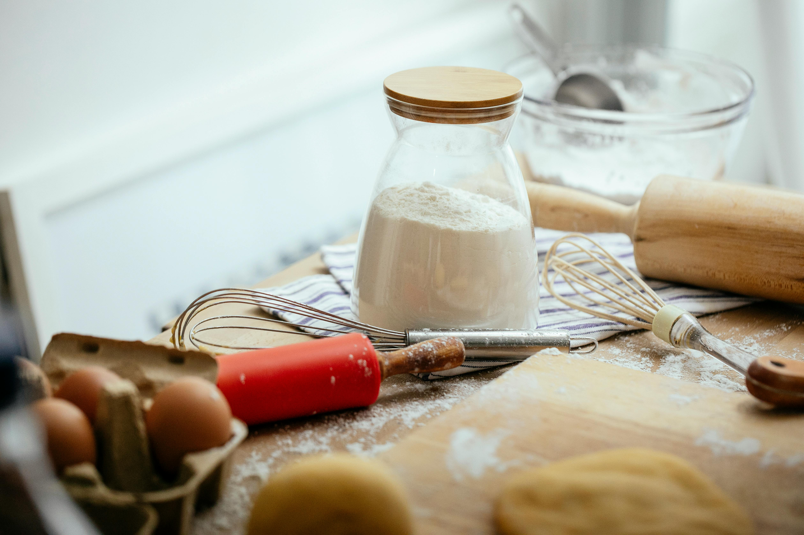

Consejos para cocina sin gluten
Conoce los alimentos permitidos y los que no:
- Familiarízate con qué alimentos contienen gluten y cuáles no.
Los granos como trigo, cebada, centeno y avena (a menos que sean certificados como libres de gluten) contienen gluten, mientras que otros como arroz, maíz, quinoa y tapioca son seguros.
- Lee las etiquetas de los productos:
Al comprar alimentos envasados, siempre revisa las etiquetas para asegurarte de que no contengan gluten. Busca términos como "libre de gluten" o "sin gluten" en el empaque.
- Cocina con ingredientes naturales:
Opta por ingredientes naturales y frescos en lugar de productos procesados, ya que estos últimos pueden contener gluten oculto en aditivos o saborizantes.
- Usa harinas alternativas:
Experimenta con harinas alternativas libres de gluten, como harina de almendras, harina de coco, harina de arroz, harina de maíz, harina de garbanzos o harina de quinoa. Estas harinas pueden usarse en lugar de la harina de trigo en muchas recetas.
- Tené cuidado con la contaminación cruzada:
Asegúrate de mantener tu área de cocina limpia y libre de contaminación cruzada. Utiliza utensilios y equipo de cocina separados para preparar alimentos sin gluten y evita la contaminación cruzada al cocinar.
- Prueba nuevas recetas:
Explora nuevas recetas sin gluten para diversificar tu dieta. En nuestra sitio web podes encontrar recetas deliciosas y creativas que no contienen gluten para los diferentes momentos del día.
- Sé consciente al comer fuera:
Al comer en restaurantes, asegúrate de informar a tu camarero sobre tu necesidad de una dieta libre de gluten. Pregunta sobre las opciones sin gluten en el menú y cómo se preparan los alimentos para evitar la contaminación cruzada en la cocina. En la sección “Mapa”, de nuestra página vas a encontrar diferentes restaurantes y cafés aptos para celíacos!
- Sé paciente y perseverante:
Adaptarse a una dieta sin gluten puede llevar tiempo y esfuerzo. Sé paciente con vos mismo mientras aprendes nuevas técnicas de cocina y descubres qué alimentos funcionan mejor para ti.